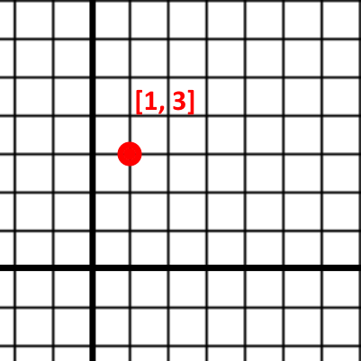
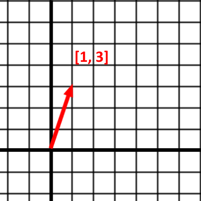
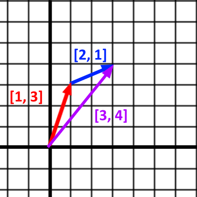
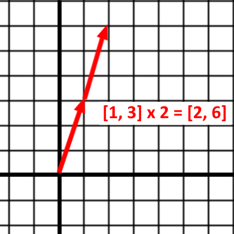

Welcome to our brief introduction to Vectors and the math you can do with them.
A Vector in UE4 is a collection of 3 numbers labeled X, Y, and Z.
In math notation, a Vector looks like:
As you’ve probably guessed, X, Y, and Z represent some point in 3D space.
For simplicity’s sake, we’re going to do the rest of the lesson with 2D vectors so that we can graph on a 2D plane. Everything that applies to 2D vectors applies to 3D vectors.
Let’s look at this 2D vector:
If this vector was representing a Location, we’d plot it as Point:

But if we plotted it as a Vector, it’d look like:

As you can see, Vectors can simply represent a Location in the world, or they can represent a Direction and Distance from their Origin.
Let’s work through some math now!
When we add Vectors, we just add their components together like so:
In a graph, it looks like you’re joining the vectors head-to-tail, or offsetting one of the vectors by the other:

Let’s say you want to offset an actor’s location by some amount. This is simple with vector addition:
You can make a Vector longer or shorter by multiplying it by a number:
In a graph, this looks like:

You want to move an asteroid towards the player at a speed of 5cm/tick. You have the Direction from the asteroid to the player.
You must ensure that the length of your Direction vector is 1, also called a Unit Vector. To do that, you have to Normalize the vector using the Normalize node.
This brief intro covered the basics you need for moving UE4 actors with math. There is so much more to learn, and all of it can be applied to your work in UE4.
This Math is Fun article covers more about vectors and contains links for even more learning.